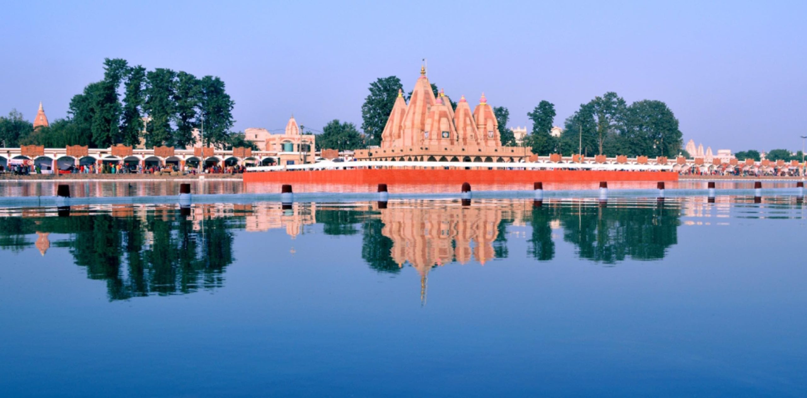
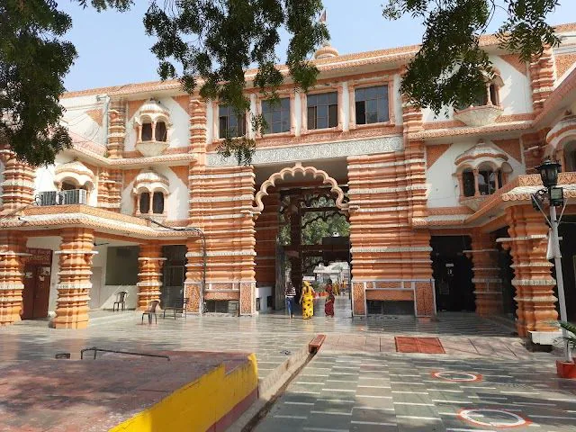
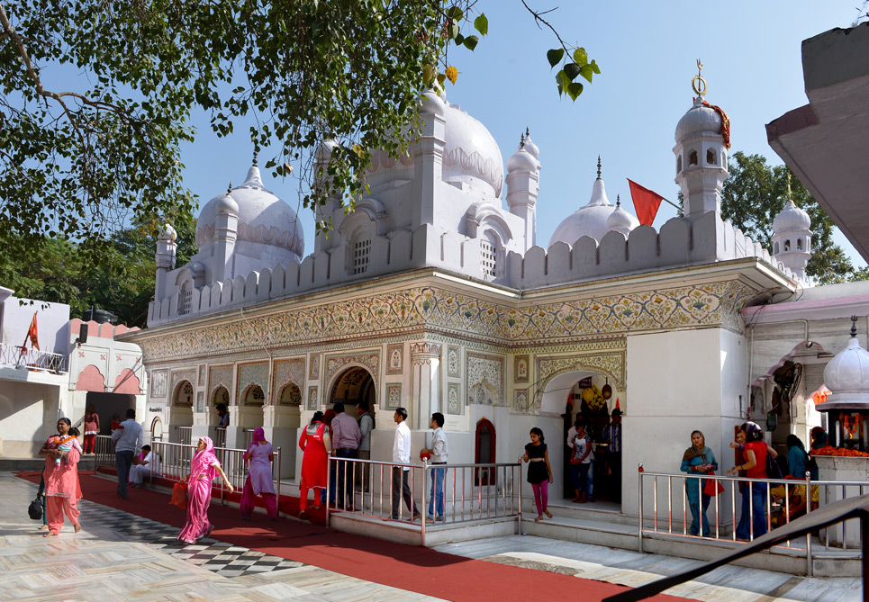
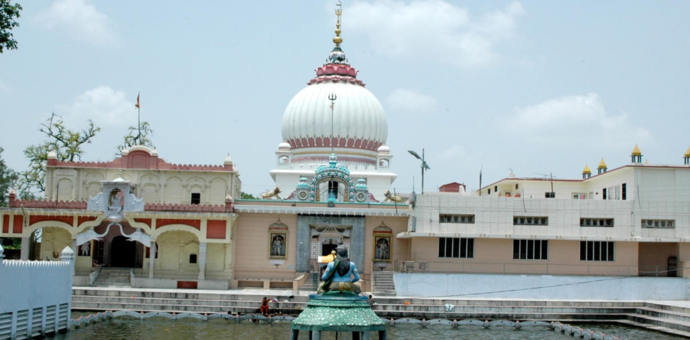
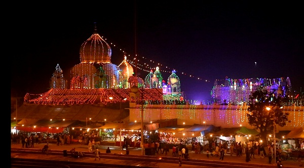

Temples and piligrimages in Haryana
Brahma Sarovar, Kurukshetra

Brahma Sarovar in Kurukshetra is one of the most sacred water tanks in India and is believed to have been created by Lord Brahma. It is closely associated with the Mahabharata and attracts pilgrims, especially during solar eclipses.
Key Aspects of Brahma Sarovar:
- Religious Significance: Considered one of the holiest water bodies in India.
- Historical Importance: Associated with the Mahabharata and ancient Vedic traditions.
- Festivals: Huge gatherings during solar eclipses and Gita Jayanti.
- Location: Kurukshetra, Haryana.
- Click here for more information.
Sheetla Mata Mandir, Gurugram

Sheetla Mata Mandir in Gurugram is a famous Hindu temple dedicated to Goddess Sheetla, believed to cure diseases and protect devotees. The temple sees heavy footfall during Navratri.
Key Details:
- Significance: Devotees seek blessings for health and well-being.
- Best Time to Visit: Navratri festival.
- Location: Gurugram, Haryana.
- Accessibility: Easily reachable by road and metro.
- Click here for details.
Mansa Devi Temple, Panchkula

Mansa Devi Temple in Panchkula is one of the most prominent Shakti temples in North India. Dedicated to Goddess Mansa Devi, it is a major pilgrimage site attracting thousands of devotees.
Key Information:
- Religious Importance: A revered Shakti Peeth.
- Best Time: Navratri festival.
- Location: Panchkula, Haryana.
- Nearby: Chandigarh city.
- Click here for more information.
Sthaneshwar Mahadev Temple, Kurukshetra

Sthaneshwar Mahadev Temple is an ancient shrine dedicated to Lord Shiva and is believed to have been visited by the Pandavas before the Mahabharata war.
Key Aspects:
- Historical Significance: Linked to the Mahabharata era.
- Religious Importance: Devotees pray before visiting Kurukshetra.
- Best Time: Maha Shivaratri.
- Location: Kurukshetra, Haryana.
Kapal Mochan, Yamunanagar

Kapal Mochan is a sacred pilgrimage site known for its holy tanks and temples. It is believed that taking a dip here cleanses sins.
Key Details:
- Religious Significance: Associated with purification rituals.
- Festival: Kartik Purnima fair.
- Location: Yamunanagar, Haryana.
- Nearby: Adi Badri temple complex.